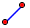

Add a Line

Add a Line
To add a line, the user can: (1) Click two point to construct a line. (2) Click a point, drag to a new position, release the mouse and the new line will be constructed.
(1) For Click Mode.
Use the mouse click a point, then click another point (without dragging the mouse).
- Each time the mouse is clicked, if the pointer is not over an point, this click is the same as Adding a Point. Otherwise the existing point will be selected.
- After the two point are constructed or selected, a line with two points will be constructed automatically.
(2) For Drag Mode.
Use the mouse click a point, then click another point (without dragging the mouse).
- The first click is to select or Add a Point as we have described in Click Mode.
- The release of the mouse also cause another point being selected or constructed.
Â